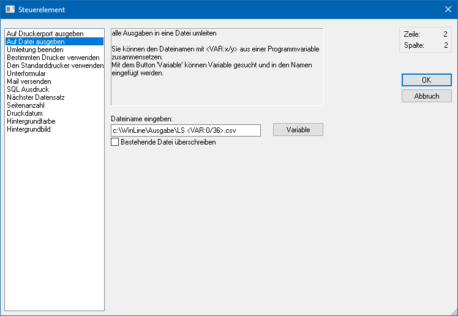

Mit dem Steuerelement "Auf Datei ausgeben" kann eine Druckumleitung in eine ASCII-Datei vorgenommen werden. Hierbei ist der Aufbau der ASCII-Datei frei gestaltbar.
Hinweis
Eine Dateiausgabe findet nur statt, wenn die Ausgabe in den Spooler oder auf den Drucker erfolgt. Eine Bildschirmausgabe führt nicht zu einer Dateiausgabe!
Achtung
Das Steuerelement "Auf Datei ausgeben" ist nur ein Teil einer Dateiausgabe, wobei die Ausgabe in einer fest vorgeschriebenen Reihenfolge erfolgen muss:
ü Start der Dateiausgabe (über Steuerelement "Auf Datei ausgeben" -> wird im Formular Editor mit "AUX ON" ausgewiesen)
ü Einzelner Einbau der Variablen, welche ausgegeben werden sollen (als Trennzeichen wird das Semikolon verwendet)
ü Beenden der Dateiausgabe (über Steuerelement "Umleitung beenden" -> wird im Formular Editor mit "AUX OFF" ausgewiesen)
Weitere Informationen entnehmen Sie bitte dem Kapitel "Bearbeitungsbeispiele" - Unterkapitel "Schritt 9: Druckumleitung in Datei".

Ø Dateiname eingeben
Nach Anwahl des Steuerelements kann in das Eingabefeld "Dateiname eingeben" das Verzeichnis und der Name der Datei bestimmt werden, in welche die Druckumleitung vorgenommen werden soll. Der Name der Datei kann hierbei entweder fix vorgegeben oder durch Variablen erzeugen werden (siehe Beispiel bei "Variable").
Hinweis
Wenn kein Verzeichnis, sondern nur ein Dateiname, angegeben wird, dann erfolgt die Ausgabe direkt in das WinLine-Verzeichnis.
Ø Variable
Durch Anklicken des Buttons "Variable" wird ein Fenster geöffnet, in dem nach allen Variablen gesucht werden können, welche in diesem Formular zur Verfügung stehen. Die Variablen werden in der Syntax <VAR:X/Y> hinterlegt, wobei X für die View und Y für die Variable steht.
Hinweis
Es ist darauf zu achten, dass mit den Variablen kein Name erzeugt wird, welcher vom Betriebssystem abgelehnt wird. D.h. im Namen der Datei dürfen folgende Zeichen nicht vorkommen:
ü \
ü /
ü :
ü *
ü ?
ü <
ü >
ü |
Beispiel
Mit der Verwendung folgender Variablen "Angebot <VAR:0/34> vom <VAR:0/50> für <VAR:0/100>.txt" wird z.B. die Datei "Angebot AN-438 vom 05.01.2015 für Bilek GmbH & Co KG.txt" erstellt.
Ø Bestehende Datei überschreiben
Standardmäßig wird bei der Druckumleitung in eine Datei immer angehängt (sofern immer die gleiche Datei verwendet wird). Wird die Option "Bestehende Datei überschreiben" aktiviert, dann wird die Datei bei jeder Ausgabe neu erzeugt.
Darstellung im Formular
Im Formular werden Steuerelemente des Typs "Auf Datei ausgeben" wie folgt dargestellt:
ü
Zusätzlich wird in der Buttonleiste "Elementeigenschaften" der Inhalt (gemäß des definierten Dateinamens - hier "C:\WinLine\Ausgabe\LS <VAR:0/36>.csv") wie folgt dargestellt:
ü